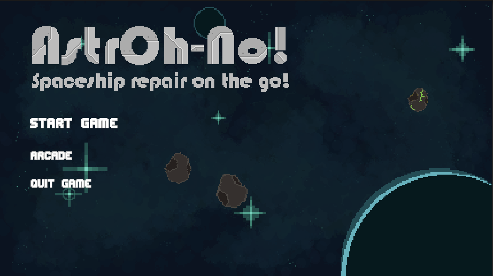

Final Week - Wrap-Up
Congratulations to everyone on the team for their great work on this project! We’ve not only survived until the end of the semester, but we’ve also created a game that is truly special.
What We Worked On
A major component that was completed during this final period was the background music. We debated between using royalty-free tracks or making our own, and our sound designer ultimately went ahead and created a loopable track using a synthesizer. The addition of the soundtrack really adds to the eerie space ambience that we were going for, ultimately enhancing the immersive experience.Another major element that was completed during this period was the arcade mode, the mode that sends infinite waves of asteroids at you. Huge props to the programmers for coming up and implementing an intricate spawn system that spawns asteroids and aliens based on the pressure the player’s currently experiencing that naturally ramps over time.
A gameplay change that we made during this period was the health pack mechanic. Instead of dropping randomly from defeating enemies which does not tie into the ship-repair theme, we added a ship module called the medbay. The medbay dispenses health packs for coins that the player would get from both defeating enemies and fixing the ship, making it a better healing mechanism as it incorporates the theme while adding an additional layer of reward with the act of purchasing the medkits.

AstrOh-No! Title Page
Our level designer also revamped the overall level structure so that the ramps between levels are more noticeable and make more sense. To do this, the level count was increased from 3 to 4, and the new elements introduced in each level were redistributed. The tutorial dialogues were also updated to both accommodate this decision and flesh out the story a little more.Next Steps
As the semester has already ended, further updates aren’t required for AstrOh-No anymore. However, there is a high likelihood that it will continue to be worked on during our own time, as we believe it has a really solid foundation and can become a great indie game with enough work.← Back to Weekly Blogs